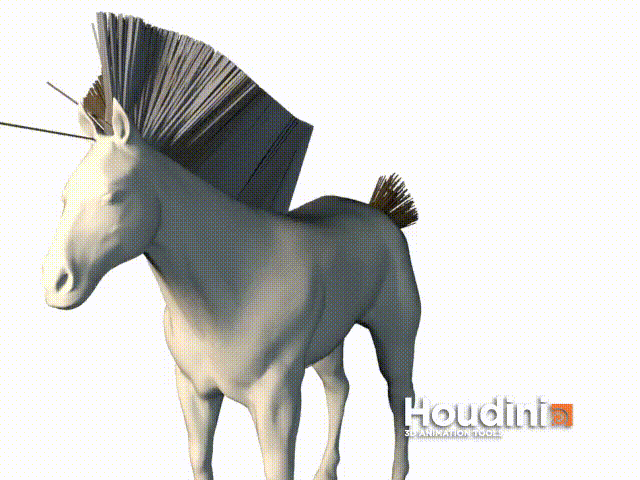

гений миллиардер плейбой филантроп
sokolov-as-i@yandex.ruПисал высоконагруженный бекенд на Python 3 и С++, разгребал легаси на C# и Python 2. С каждым годом становилось все скучнее писать код, и все интереснее заниматься другими вещами.
cпроектировал и реализовал реферальную программу для водителей такси. Программа упростила запуск сервиса в новых странах, а в старых странах присутствия снизила стоимость привлечения водителя почти в 2 раза
разработал интеграцию с Федеральной налоговой службой для самозанятых. Запустились самыми первыми в день вступления закона в силу (в обед 1го января!), следующий пользователь API ФНС появился только в феврале
спроектировал, согласовал и приглядывал за реализацией как техлид большой рефакторинг участка цикла заказа - самой критичной для бизнеса функциональности. В итоге:
проводил технические собеседования с соискателями и потенциальными коллегами
...и много всякой другой работы, как непосредственно разработчиком, так и лидом проекта, руководя командой в несколько разработчиков
Один из первых стартапов по доставке еды в Москве. Писал фронтенд на ReactJS, бекенд на PHP и Laravel, и чуть-чуть мобильные приложения на React Native.
Больше всего занимался админкой для владельцев ресторанов - настройка меню для отобрадения в клиентском приложении, статистка по заказам и финансовая отчетность, инструменты коммуникации с посетителями ресторанов, программы лояльности
Другой большой проект - принтер чеков: официанты плохо замечали уведомления в приложении, и для них решили экспериментально собрать принтер чеков. Я закупил Rapsberry Pi и сам принтер, разобрался с байтовым протоколом принтера, и реализовал автоматическую печать чеков с бекенда. Итого: доля пропущенных официантами заказов значительно упала, а устройство проработало почти год без внешнего вмешательства.
Помимо разработки активно интересовался и старался участвовать во всех аспектах бизнеса:
Стажировался в R&D-отделе (писал курсовую работу) — занимался задачей генерации физически корректных волос у трехмерных персонажей
Преподавал ИКТ (программирование). 5-ый класс учил пользоваться компьютером и интернетом, с 6-ым решали алгоритмические задачки и разбирались в веб-версткой, с 9-ым классом учились применять Python к смежным задачам. Помимо этого вел неформальный кружок для старшеклассников, интересующихся рендером и компьютерной графикой на основе лекций Károly Zsolnai-Fehér в TU Wien.